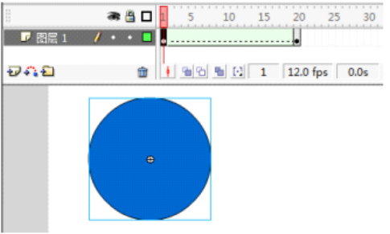
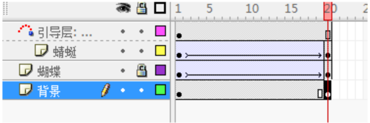
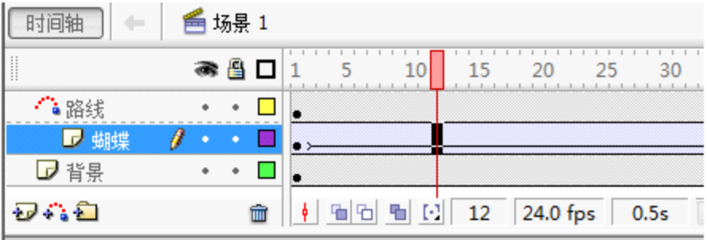

1.在 Flash 中，为了防止误操作，可以将暂时不需要编辑的图层锁定。（ ）
图层锁定后无法编辑、移动该图层中的对象，可有效防止误操作。
2.在 Flash 中，“库” 面板可以通过 “窗口” 菜单中的相应命令打开或关闭。（ ）
在 Flash 中，所有面板都可以通过“窗口”菜单进行打开或关闭，“库”面板也不例外。
3.在 Flash 中创建一个新的 Flash 文档时，默认的帧频为 10fps。（ ）
Flash 新建文档默认帧频为 24fps，不是 10fps。
3.在 Flash 中对舞台中的圆形创建形状补间动画后，时间轴上显示创建动画不成功，原因是没有对圆形进行分离。（ ）

形状补间动画需要对象为矢量图形，元件、文字等必须分离（打散）后才能创建成功。
5.在 Flash 中创建一个新的 Flash 文档时，默认的帧频为 24fps。（ ）
在 Flash 中新建文档时，默认帧频为 24fps。
6.如图所示，“蝴蝶” 和 “蜻蜓” 两个图层都是被引导层。（ ）

一个引导层下可以有多个被引导层，但题图中并非两个图层都是被引导层。
7.如图所示，该 Flash 动画播放时每秒播放 12 帧画面。（ ）

从时间轴下方的信息栏可以清晰看到，帧频标注为 24.0 fps，这表示动画每秒播放 24 帧画面，而非 12 帧。
8.在 Flash 的舞台上，使用橡皮擦工具 “” 无法擦除元件。（ ）
橡皮擦工具仅能擦除舞台上的矢量图形，元件属于整体对象，直接使用橡皮擦工具无法对其进行擦除，需先将元件分离（打散）为矢量图形后才能擦除。
9.在 Flash 的工具箱中，“” 是缩放工具，可以放大或缩小舞台。（ ）
Flash 工具箱中的缩放工具图标是放大镜样式，不是“○”，“○”通常是椭圆工具，用于绘制椭圆图形。
10.在 Flash 中，使用工具 “” 可以绘制任意的曲线。（ ）
铅笔工具可以自由绘制直线、曲线等任意形状的线条，能够绘制任意的曲线。